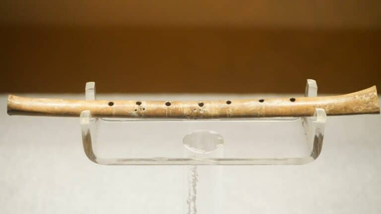
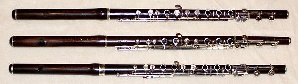
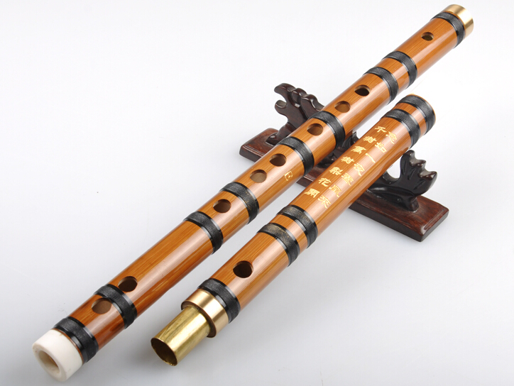
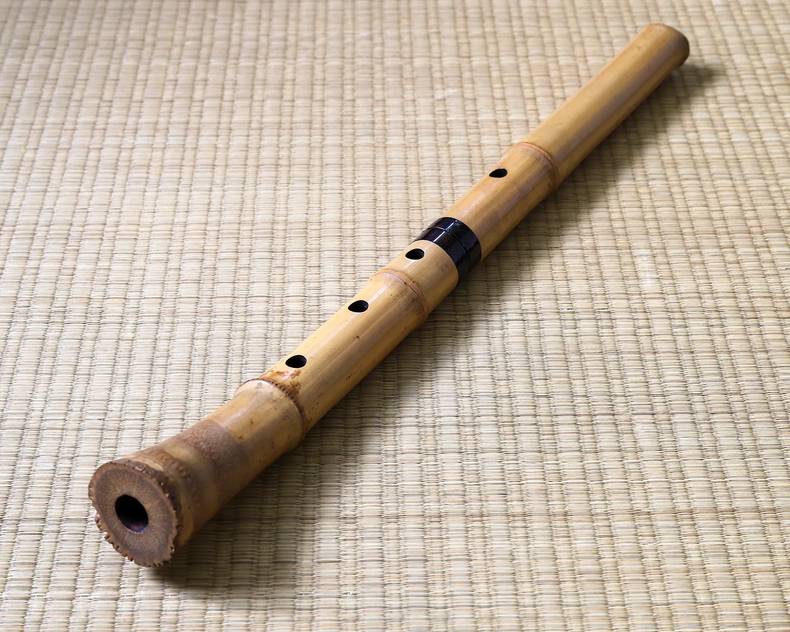
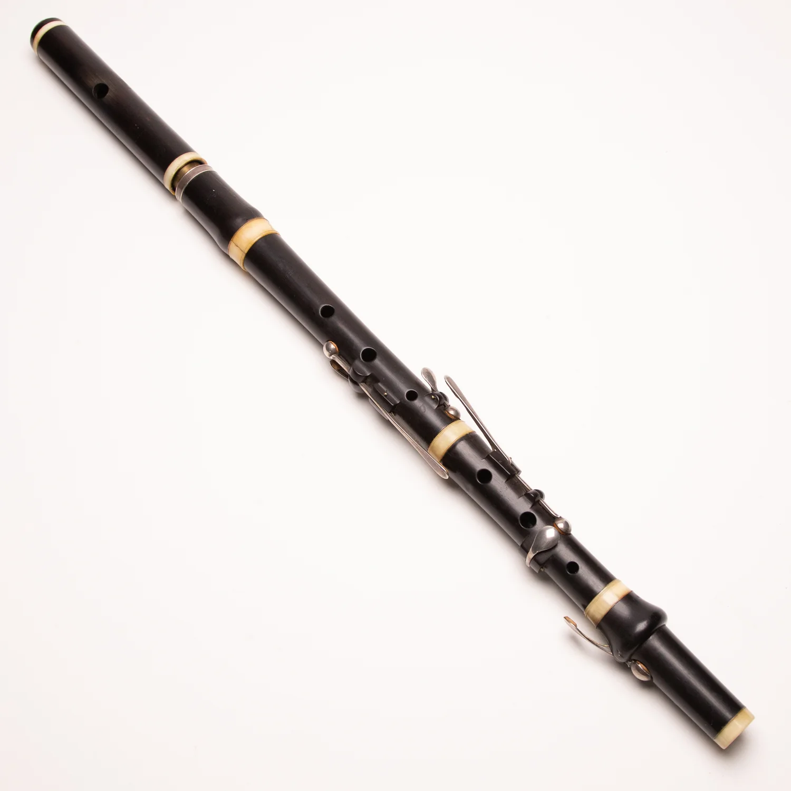
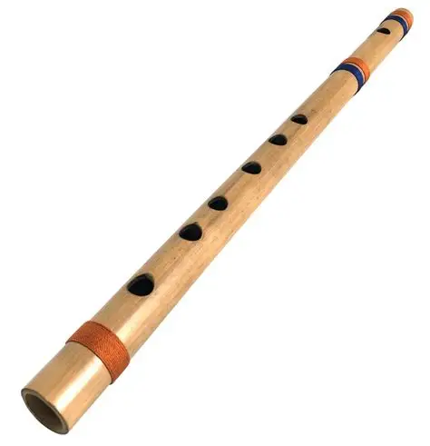

Ancient Beginnings
The flute is one of the oldest musical instruments in the world. The earliest flutes were made from animal bones over 40,000 years ago. Archaeologists have found bone flutes in Germany and France from the Ice Age. These flutes had holes like modern flutes and could play different notes.

Medieval and Renaissance
During the Middle Ages, flutes were made from wood. They were simple tubes with holes. In the Renaissance period (1400-1600), flutes became more popular in European courts and churches. Musicians started playing flutes in groups with other instruments.
The Baroque Flute
In the 1700s, the flute changed a lot. It became longer and had more keys. Composers like Bach and Handel wrote music for the flute. The baroque flute was usually made of boxwood or ebony and had one key.
The Modern Flute
The biggest change came in 1847. A German man named Theobald Böhm invented a new system for the flute. He used metal instead of wood and designed a new key mechanism. This is called the "Böhm system" and it is still used on all modern flutes today.

Flutes Around the World
Many cultures have their own flutes. The Chinese have the dizi, made from bamboo. The Japanese have the shakuhachi. In South America, people play the quena. In Ireland, the tin whistle and Irish flute are very popular. Each one sounds different and has its own history.
Flutes from Different Cultures

Chinese Dizi

Japanese Shakuhachi

South American Quena

Irish Flute

Indian Bansuri
Flute Timeline
Fun Facts About the Flute
• The flute is the oldest instrument that can still play modern music.
• A flute can play over three octaves.
• The piccolo is half the size of a flute and plays the highest notes.
• The bass flute is so long that the player has to reach forward to play it.
• Some modern flutes are made from pure gold or platinum.